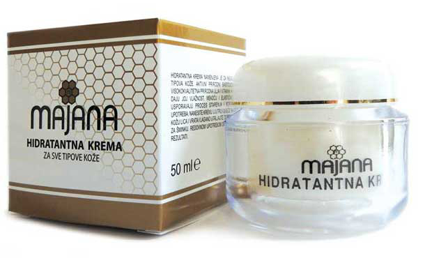

PROIZVODI
lista nasih proizvoda
PROIZVODI
(6)
-

Antirid
Aktivni prirodni sastojci iz
pčelinjeg voska, visokokvalitetna
prirodna ulja, umanjuju postojeće
bore i sprečavaju nastanak novih. -

Imunil za jačanje imuniteta
Imunil je prirodni proizvod koji u svom
sastavu sadrži 400 g cvetnog meda, 40 g
poliflornog polena, 8 g propolisa i 2 g
matičnog mleča.
Imunil je idealna kombinacija velikog broja
vitamina, minerala, aminokiselina, ugljenih
hidrata, enzima i drugih supstanci iz pčelinjih
proizvoda koje povoljno na metaboličke
procese u organizmu.
Način upotrebe: Plastičnu kašičicu preparata
staviti da se topi u ustima, 1-3 puta na dan,
pola sata pre jela. Deci od 2 do 12 godina
davati po pola kašičice.
Neto masa: 450g -

Bronhil
Bronhil ima izraženo protivbakterijsko,
protivirusno, protivgljivično, protivupalno
dejstvo. Koristi se kod bronhitisa, astme,
kašlja, upale grla i desni, gripa i gastritisa.
Preparat smiruje, regeneriše i osvežava.
Način upotrebe: Kašičicu preparata
uzeti 4-5 puta na dan (na svaka 3 sata) i
držati u ustima do rastvaranja ½
sata pre jela.
Energetska vrednost: 1356kJ/100g
Neto masa: 450g -
Propolis melem
Aktivni sastojci iz propolisa, pčelinjeg voska,
meda, maslinovo i kantarionovo ulje deluju
povoljno na regeneraciju suve, osetljive i
oštećene kože. Melem se može koristiti i
kod manjih opekotina, ekcema, za
brže zarastanje rana.
Način upotrebe: Namazati više puta u toku
dana u tankom sloju.
Pakovanje: 30ml -

Pakovanje za kosu
Antioksidantni i revitalizirajući kompleks na
prirodan način regeneriše suvu, tanku i
oštećenu kosu. Odlično je sredstvo protiv
opadanja, peruti i seboreje, podstiče rast
kose, daje kosi volumen, mekoću i sjaj.
Pakovanje za kosu sadrzi ricinusovo ulje,
maslinovo ulje, jojobino ulje, ulje pšeničnih
klica, ulje grozđanih semenki, vitamin E,
ekstrakt propolisa i med.
Pakovanje: 100 ml